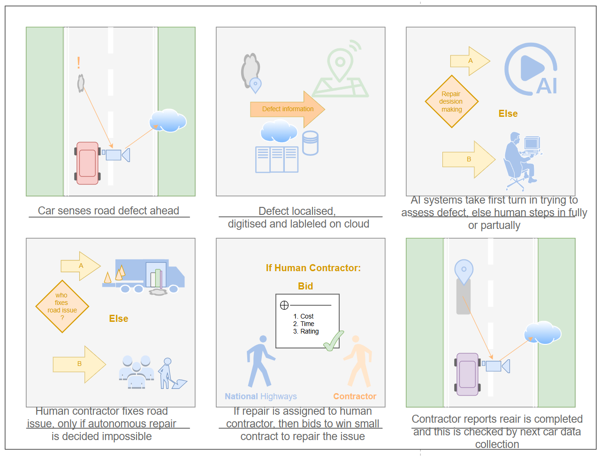
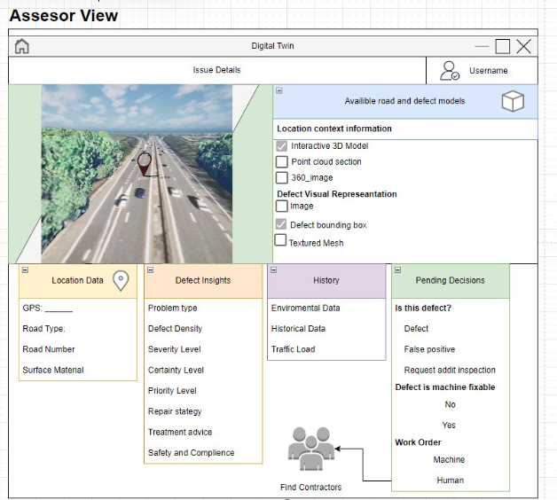

University of Cambridge • Costain Group • National Highways
RoadGP: AI Defect Triage & Human-in-the-Loop Workflow UX
Designing an operational digital twin interface that translates complex machine learning pavement analysis into rapid, trusted decision workflows for road maintenance contractors and regional inspectors.
1. The Problem & Operational Friction
Highway agencies capture terabytes of mobile survey footage, LiDAR, and computer vision defect telemetry. However, raw algorithm outputs (e.g., bounding boxes with 85% confidence scores) overwhelmed civil engineers and maintenance dispatchers.
Asset managers were trapped in manual, spreadsheet-heavy verification processes taking up to three weeks per survey stretch. Because field workers lacked spatial context and historical defect trends, false positives were common, and contractor repair crews were frequently dispatched with incomplete defect severity data.
2. Service Discovery & Stakeholder Mapping
To align machine learning capabilities with real field constraints, I initiated a user research sprint interviewing regional road inspectors, asset contractors, and computer vision researchers:
- Need for Trust & Explainability: Inspectors refused automated "black box" decisions; they demanded visual before/after evidence alongside AI confidence scores.
- Contextual Spatial Map: Triage requires spatial clustering (e.g., understanding if 5 micro-cracks form a high-risk cluster near a bridge expansion joint).
- Contractor Actionability: Work orders need precise GPS coordinates, lane identification, and recommended repair material estimates rather than raw pixel coordinates.
We translated these insights into an end-to-end service blueprint detailing how sensor data flows from camera trucks through automated AI classification into verified contractor work packages.
3. Wireframing, Prototyping & Architecture
Using Python Dash and Flask, I rapidly built interactive, working prototypes rather than static Figma mockups, enabling live stakeholder usability testing against real highway datasets:


Technical Architecture Highlights:
- Human-in-the-Loop Validation: One-click accept/reject/re-classify buttons that feed operator corrections back to retrain ML models.
- Dual-Screen GIS Alignment: Synchronized geographic map view with high-speed video frames and localized 3D surface mesh elevation profiles.
- Role-Based Views: Tailored dashboard toggles for executive reporting (aggregate budget forecasts) versus field dispatch (contractor repair coordinates).
4. Live Interaction Demo
Watch the interactive interface prototype demonstrating defect browsing, bounding box validation, and real-time 3D telemetry rendering:
5. Measurable Outcomes & Leadership Impact
70% Time Reduction
Reduced defect review and triage cycle from 15 days to under 4 days per survey section during pilot testing.
Zero Training Curve
Non-technical civil engineering assessors completed accurate verifications within 10 minutes of initial onboarding.
National Highways Buy-In
Presented prototype to National Highways and tier-1 contractors, securing further R&D adoption for Cambridge Digital Roads.